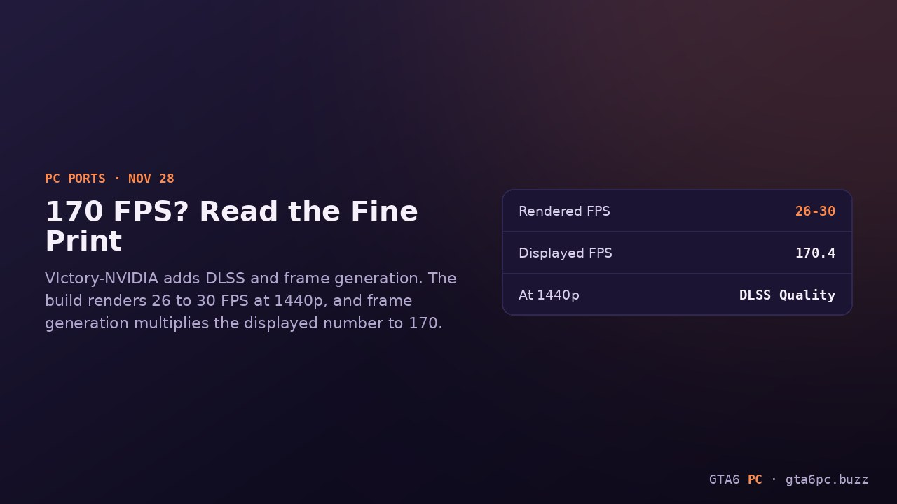

VIctory-NVIDIA claims 170 FPS with DLSS frame generation
A developer known as trustno1-coder has released a major update to VIctory-NVIDIA, the NVIDIA tuned fork of the unofficial GTA 6 PC port, adding DLSS upscaling and frame generation. The developer reports 26 to 30 fully rendered frames per second at 1440p with DLSS enabled, up from 15 to 17 FPS at 1080p on the previous version, and says frame generation can push the displayed frame rate to 170 FPS. The 170 figure is a displayed number, not a rendered one, and the tests cover only the closed rooms of the prologue, so it is worth reading carefully before repeating it.

The update in one paragraph
On November 26, 2026, the VIctory-NVIDIA fork migrated to a new codebase, called foxhound, which gave it a significant performance boost when using the Xbox Series X graphics profile. GameGPU reported the update on November 27, and VGTimes confirmed the same details the same day. The developer, known as trustno1-coder, reports that the build now delivers between 26 and 30 fully rendered frames per second without frame generation, at 1440p with DLSS scaling enabled, on an RTX 5070. The previous version of the same fork on the same PC only reached 15 to 17 FPS at a lower 1080p resolution, so the jump is roughly double the rendered frame rate at a higher resolution.
The update also removes the built in 30 FPS cap, improves water rendering, adds a settings menu and a built in performance monitor, and improves memory handling. The project's README describes fixes for rendering problems that previously made objects and parts of the environment disappear. The headline feature is DLSS support: DLSS Super Resolution for upscaling, and DLSS Frame Generation with multipliers from 2x to 6x.
Rendered frames vs displayed frames
This is where the 170 FPS claim needs unpacking. The developer's own example shows frame generation taking 28.4 real frames and displaying 170.4 frames per second, a 6x multiplier. That means for every frame the port actually renders, the graphics card generates up to five more frames in between, and the screen shows all of them. The displayed counter reads 170, but the game itself is still simulating and rendering at about 28 frames per second.
That distinction matters in two ways. First, frame generation makes motion look smoother, but it does not make the game respond faster. Your inputs are still processed at the real frame rate, and frame generation adds a small amount of input delay on top. Second, generated frames are estimates, not new pictures of the game world, so fast movement and sudden scene changes can show visible artefacts. The technology is real and useful on official PC games, where it is one of the reasons modern cards feel fast, but a displayed number is not a benchmark, and it should never be quoted as if the port renders 170 frames per second.
For comparison, the base VIctory layer reached about 20 FPS in the open world, with the jet ski sequence at 19 to 23 FPS and the city at about 12 FPS, as our report on the VIctory 20 FPS milestone covers. The NVIDIA fork's 26 to 30 rendered FPS is a genuine improvement on that, but it is measured in a much easier scene, which is the next caveat.
The caveats the headline skips
The developer is clear about the test conditions, and they are narrow. The stated performance results were obtained exclusively in the closed starting rooms of the prologue, not in the open world free roam mode, which places significantly higher demands on the system. The prologue rooms are a small, enclosed, lightly populated space. The open world, with traffic, crowds, physics and the full city, is the hard part, and no figure has been published for it on this build.
Ray tracing remains disabled by default in the build, and the current implementation does not support the game's original ray tracing properly, instead using estimated lighting and reflections. Some scenes may have visual artefacts, textures can take time to load, and frame generation needs additional graphics memory. The first launch of a new build can also stutter while the graphics driver compiles shaders.
PortWatch, the independent tracker, has also tested the VIctory-NVIDIA fork and reported that it maintained around 20 FPS without crashes, which is a more conservative figure than the developer's 26 to 30, and it matches the tracker consensus that the best credible frame rate across all ports is about 20 FPS. All of the developer's figures are the project's own measurements and have not been independently reproduced.
How it compares to the rest of the race
The foxhound update is the fastest rendered frame rate claimed by any public fork so far, but the claims keep moving and the projects keep vanishing. ScarlettPort, the first port with a public release, reaches about 20 FPS on an RX 9060 XT. A separate XCL clip claims 30 FPS in the opening boat scene, which we covered in our report on the 30 FPS claim. The two furthest projects of the week, Belobug and CGBJ, both disappeared within about 36 hours, as our November 28 update reports.
The pattern is consistent. Each new codebase or fork squeezes more frames out of the leaked Xbox build, the numbers are measured in the easiest scenes on strong hardware, and the legal pressure keeps removing projects. Take-Two's November 24 DMCA notice targeted 3,007 repositories in the Leonida network, and the Belobug and CGBJ removals followed without a public notice. A fork that is public today can be gone tomorrow, and its download links with it.
What it does not mean
It does not mean GTA 6 is playable on PC. No port is stable, no port has finished the game, and no port has a public download you should trust. Rockstar has announced no official PC version, and the only serious report on a PC date, from GamesBeat in October, points to the first three months of 2027 and is still unconfirmed.
The warning has not changed since launch day. Most files going around as a GTA 6 PC download carry password stealing malware, and none of the real projects distributes a finished game. If a site offers you a complete GTA 6 PC download, a single installer, or a torrent of the full game, it is a fake. Do not download anything, do not pay anyone, and do not enter your passwords anywhere that promises early access. When there is a real PC version, Rockstar will announce it, and we will cover it here.
Quick answers
Did a GTA 6 PC port really hit 170 FPS?
No, not in real frames. The developer reports 28.4 fully rendered frames per second, and DLSS frame generation with a 6x multiplier displays 170.4 frames per second. The extra frames are generated by the graphics card between the real ones, so the game is still running at about 28 real frames per second.
What is DLSS frame generation?
DLSS frame generation is an NVIDIA technology that uses AI to create extra frames between the frames the game actually renders, so the displayed frame rate rises without the game doing more rendering work. It can make motion look smoother, but it does not speed up the game's own simulation, and it adds a small amount of input delay. It needs an RTX 40 or 50 series graphics card, and it uses extra video memory.
What hardware ran the VIctory-NVIDIA update?
The developer's test PC used a GeForce RTX 5070 with 12 GB of video memory, an AMD Ryzen 7 9800X3D processor and 64 GB of RAM. At 2560 by 1440 with DLSS Quality enabled, the latest build reportedly holds mostly 26 to 30 rendered frames per second in the opening areas. The previous version of the same fork managed 15 to 17 FPS at 1080p on the same PC.
Why is the 170 FPS figure misleading?
Because it mixes two different measurements. The rendered frame rate, 26 to 30 FPS, is what the port actually achieves. The 170.4 FPS figure is the displayed rate after frame generation inserts up to five generated frames for every real one. Generated frames do not add game simulation or responsiveness, and the number comes from the closed rooms of the prologue, the lightest area of the game, not from the open world.
Can I download VIctory-NVIDIA?
No, and you should not try to find a copy. The fork is built from leaked Xbox game files, it is unofficial and unauthorised, and no legitimate download exists. Most files circulating as a GTA 6 PC download carry password stealing malware. Take-Two filed a DMCA notice on November 24 targeting 3,007 repositories in the Leonida port network, and several port repositories have since disappeared.
How does this compare to the 20 FPS VIctory build?
It is the same family of projects, one step further on. The base VIctory layer jumped from seconds per frame to about 20 FPS, with the VIctory-NVIDIA fork at 20 to 22 FPS indoors. This update moves the same fork to the foxhound codebase and the Xbox Series X profile, roughly doubling the rendered frame rate in the prologue, at a higher resolution. The independent tracker still puts the best credible frame rate at about 20 FPS.
Last updated . We update this page when Rockstar announces anything new.
Sources
- GameGPU: Project trustno1-coder delivered up to 170 FPS in GTA 6 on the RTX 5070 with DLSS frame generation
- VGTimes: Unofficial GTA 6 PC Port VIctory-NVIDIA Adds DLSS and Frame Generation, Runs at 20 FPS Without Crashes
- TweakTown: GTA 6 PC port hits 20 FPS just days after drawing one frame every two seconds